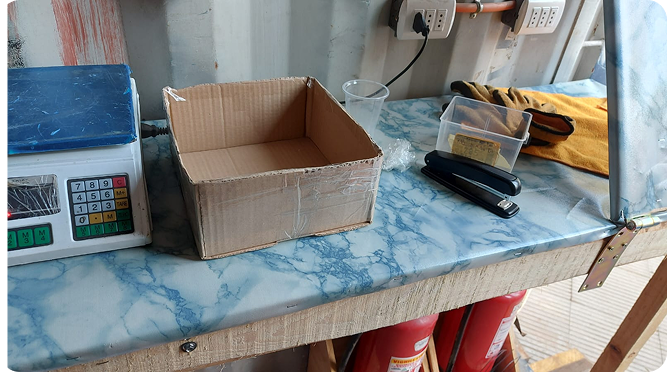
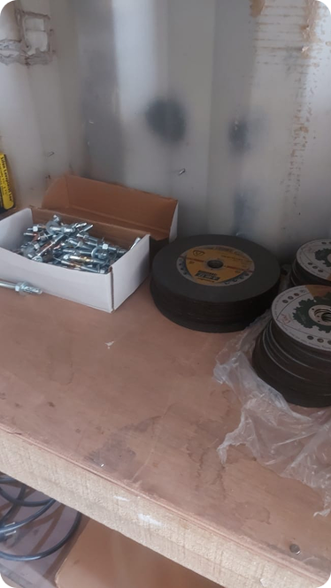
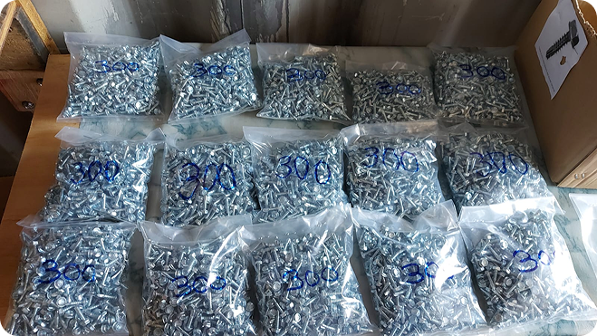

Más sobre mí:
Perfil profesional:
Estudiante de primer semestre de tercer año de Diseño Industrial en la Universidad Diego Portales, con formación técnica en Edificación de nivel medio y experiencia práctica en obra de construcción.
Ha trabajado en apoyo directo al administrador de obra, logística, control de bodega e inventarios.

Muñoz Medina
Formación académica detallada:
Diseño Industrial — 3.º año, primer semestre.
(Quinto semestre de la carrera).
Universidad: Diego Portales.
Estado: cursando.
Técnico en Edificación — Nivel Medio.
Liceo Bicentenario Polivalente Rafael Donoso Carrasco.
Estado: titulado.
Egreso: 2023.
Experiencia laboral:
Práctica profesional — 4.º medio (360 horas).
Constructora Isla Grande Limitada — Enero de 2024.
Funciones principales:
- Apoyo al administrador de obra.
- Control de bodega, inventarios y registro de materiales.
- Organizar documentación técnica.
- Apoyo logístico en actividades de obra.
- Acompañamiento en inspecciones de terreno.
Fotografías de la bodega:



Formación complementaria y habilidades:
- Manejo y uso de aplicaciones como Autodesk AutoCAD, para control y creación de planimetrías desde planta superior, lateral y frontal, como también manejo de cotas, ejes perimetrales y perspectivas isométricas.
- Manejo de extrusiones en Rhino 8 y dibujo en 2D (Make2D). Experiencia moderada de uso y producción de impresión 3D con filamentos PLA y PETG, a partir de formatos OBJ y STL. Utilización de Babylon.js Sandbox y UltiMaker Cura 5.12.0.
- Conocimientos en procesos constructivos.
- Buen trato y trabajo en equipo.
- Capacidad de adaptarse y aprender rápidamente.